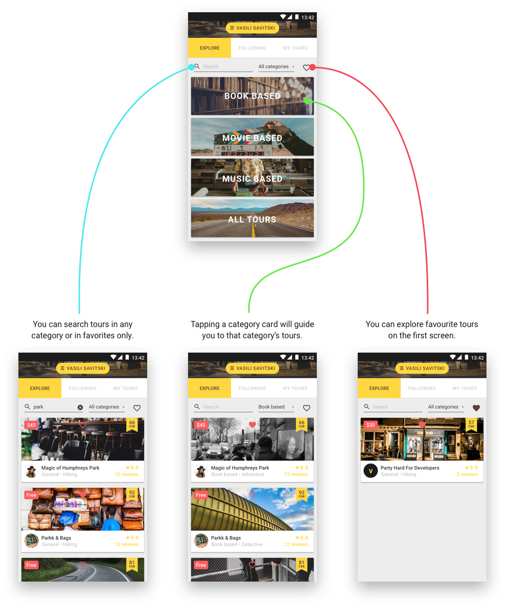
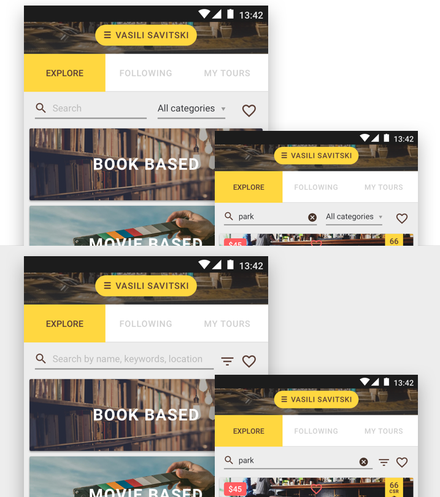

Land, Explore Screens
Last update on January 20, 2019.
Problem
Current ‘Explore Tours’ doesn’t explain the full variety of tours available for users.
Solution
Introduce categories on the first Explore Tours screen instead of/along with Tour cards.
Requirements
- Make it easy to navigate through Tours both for new and experienced users.
- Make it easy to browse through Tours or to find specific Tours using search and filters.
- No drastic changes to the layouts to prevent spending too much time on implementation.
Takeaways
- It is very important to have search accessible on the first Explore Tours screen. As an experienced user, I want to have a way to get directly to the tours I’m looking for, so that I don’t waste any time exploring multiple tours that I
don’t want.
- It’s important to have ‘Show favs only’ feature accessible on the first Explore Tours screen. As an experienced user, I want to have access to the tours that I liked, so that I can proceed with buying/exploring content on the go.
- It’s important to find a fascinating representation for categories. As a new user who has no clue what type of tour I need, I want to have some obvious & interesting starting points.

Notes & Comments
- Current layout allows to address the main group of new users but it won’t distract experienced users as well.
- We should consider swapping to the layout with a minified header as the default one. This improvement will help focus on the essentials and show more tours. The trade-off is the reduced size of the profile background image. It
seems to be a pretty good change to make.
- The height of image block in the card reduced by 20% (from 152 to 120). It allows to show the 3rd card on the screen. I think we can test images and probably reduce the height to ~100.
- Users will see Explore Tours with categories only after launching the app. You can get back to the screen in the following cases: 1) You check ‘Favs only’ option and then uncheck it; 2) You started to type in the search field
and then discarded the progress; 3) You can use ‘Get back’ native control (special button or gesture on the phone) after exploring different tours; 4) Log out or end the app running and then open it again.
- As we introduced categories in a very vivid way, we may move category’s select into ‘Filters group’ and hide it with other options: like sorting options, sub-categories, free/paid tours, location settings, etc. That will make
the screen even more content focused as almost the entire width will be devoted to a search input.
